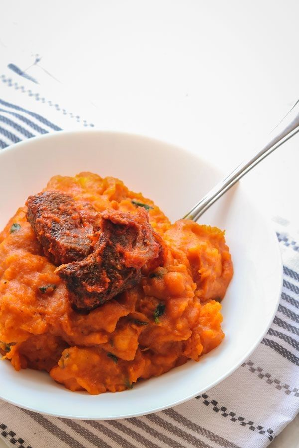

My Yam Porridge Delicacy

Description
Yam porridge, also popularly known as Asaro elepo rederede, is a popular meal in Yorubaland, Nigeria. A delicious and satisfying dish that you'll crave more of.
Ingredients
- 1 tuber of peeled and small-chunked yam
- 2 large onions, chopped
- 1 teaspoon of ground crayfish
- A measure of ground pepper or blended pepper
- Salt and palm oil to taste
- Water
- Chopped spinach or other good vegetables
- Boiled or fried meat
Steps
- Get your pot on the cooking gas and add a measure of water.
- Prepare and rinse your peeled and small-chunked yam.
- Cook the yam by pouring it into the pot filled with water.
- Heat your palm oil in another pot and add all your other ingredients, including crayfish, ground pepper, and more.
- Add the chopped spinach and your meat.
- Wait for your sauce to be done.
- Back to your yam, make sure it's soft before adding your sauce.
- Use your turning stick to turn your yam and sauce into yam porridge.
- Serve hot! Accompanied with a chilled juice.
Go back